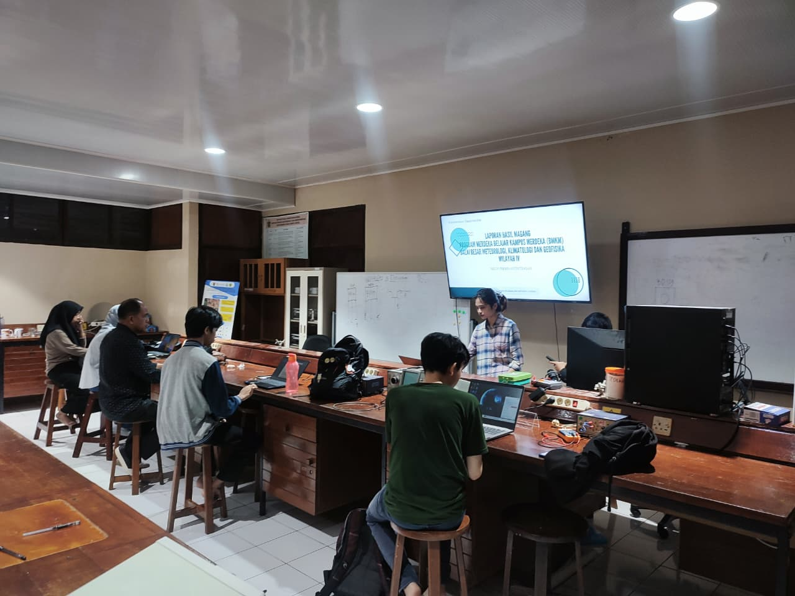
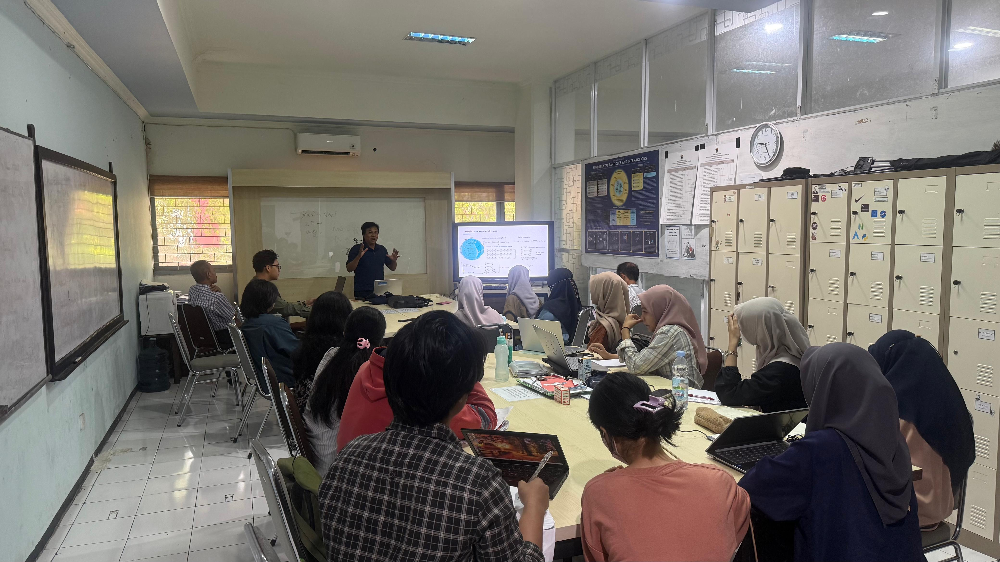
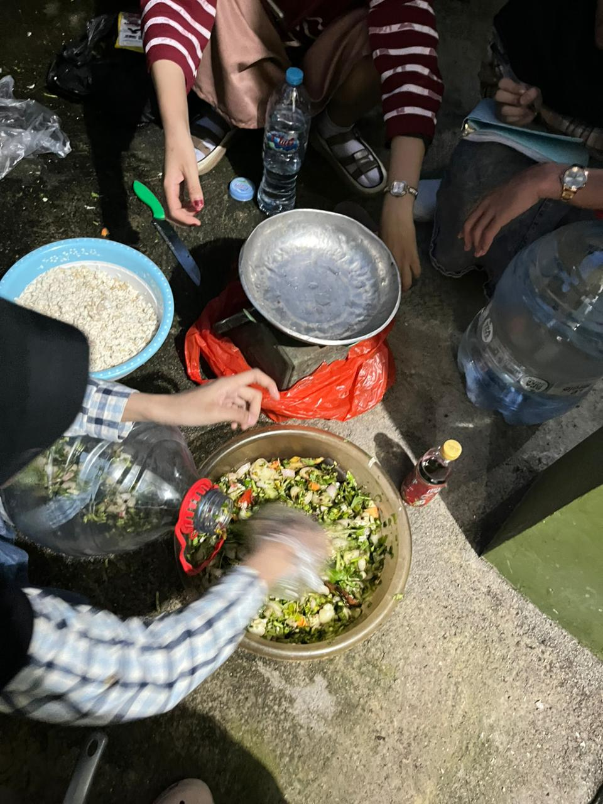
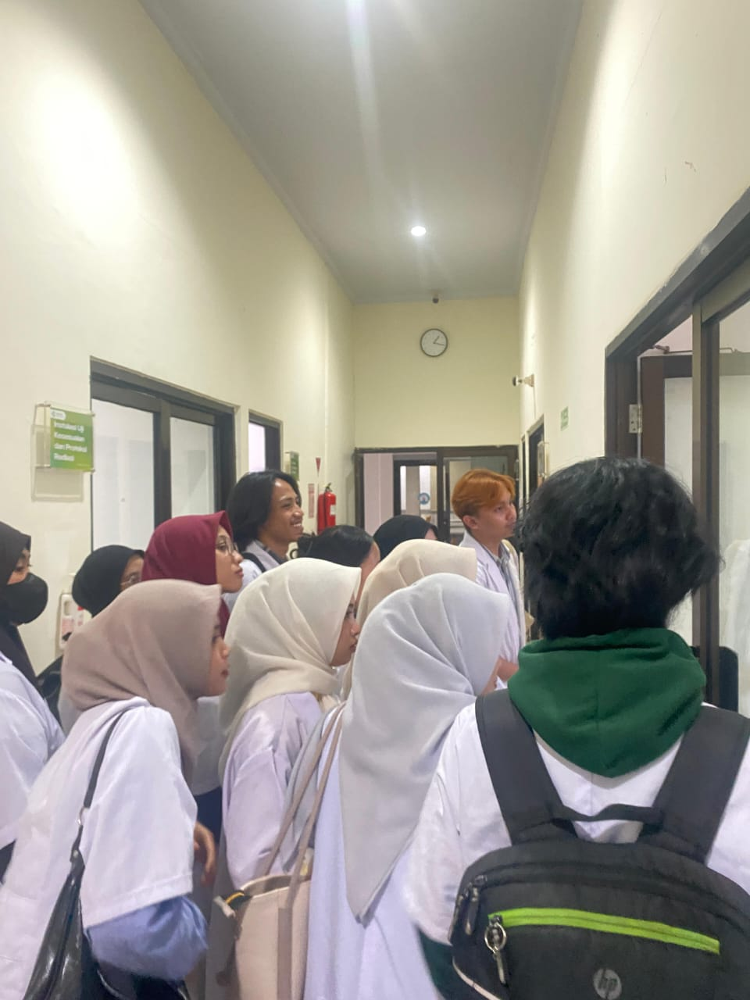

📌 Lab Teori & Komputasi

Lab Teori & Komputasi - Kolokium

Lab Teori & Komputasi - Perkuliahan Pengantar Linux

Lab Teori & Komputasi - Pelaksanaan kolokum bersama
📌 Lab Elektronika & Instrumentasi

Lab Elektronika & Instrumentasi - Praktikum Mikrokontroler

Lab Elektronika & Instrumentasi - Praktikum Sistem Sensor

Lab Elektronika & Instrumentasi - Seminar Internal
📌 Lab Energi & Material

Lab Energi & Material - Fisika keramik studi lapangan

Lab Energi & Material - Kolokium

Lab Energi & Material - Pembuatan Biogas
📌 Lab Optik & Spektroskopi

Lab Optik & Spektroskopi - Praktikum Fisika Medik

Lab Optik & Spektroskopi - Kunjungan Ke BPAFK

Lab Optik & Spektroskopi - Pengarahan sebelum praktikum